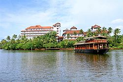
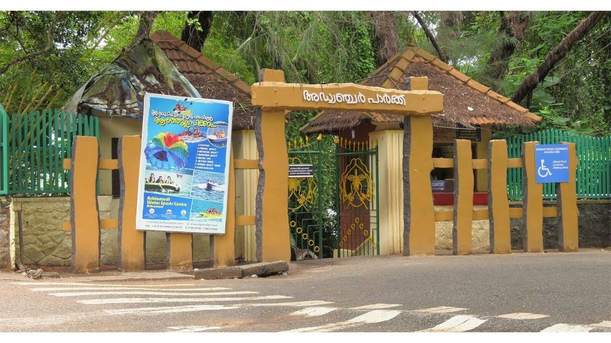

Important Places

Thevalli Palace

Ashtamudi Lake

Asramam Adventure Park
Kollam is the reputed city with an old sea port in the state of Kerala. It is also in the district Kollam. There is a market in the city centre named is Chinnakada market. This is the most visiting places of the Kerala in Kollam because of the shopping centre. Every tourist wants to shop at this place because they love to buy some things about Kerala. Kerala is a popular place for the handcrafted things. Kollam is the best place to spend a Kerala holiday by enjoying their beautiful places.There are so many beautiful places in which we are talking about a few of them. One of the popular places is the Kollam beach. This beach is also named as Mahatma Gandhi beach. It is also the first wedding destination beach of Kerala. This beach is most beautiful with their greenery and nature arranged in a proper way. The people here come for the relax themselves from the stress and tiredness. Visit this place if you also want to spend some relaxing time with your loved ones.
Thevalli Palace
Ashtamudi Lake
Asramam Adventure Park